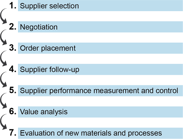
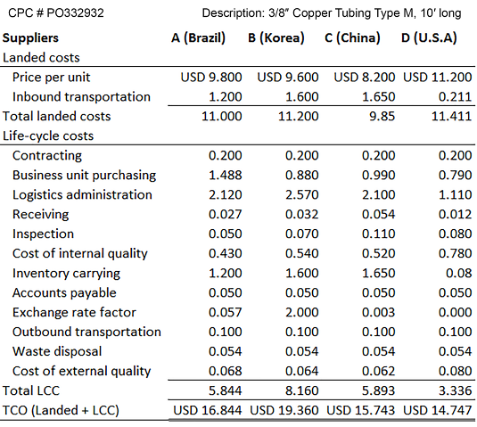
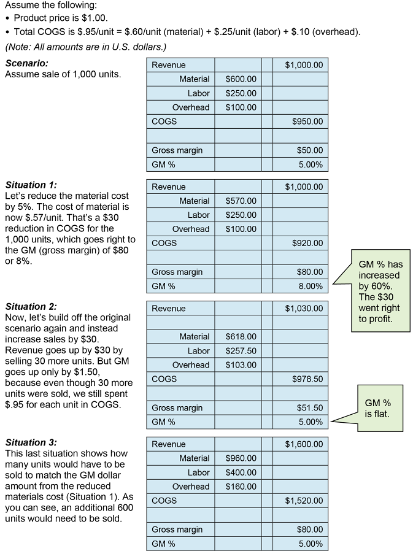

Traditional thinking: minimize price. Supply chain thinking: long-term success of all partners. Key selection criteria:
1. Cost — TCO and COGS:


2. Alignment with SC needs: site visits required before establishing partnerships. Consider supplier’s technical communications ability (real-time data exchange, RFID, EDI).
3. Corporate Social Responsibility (CSR) Policy: also called corporate citizenship policy. The brand owner is responsible for extended SC compliance. CSR topics in supplier selection:
4. Supplier Value-Added Services: inventory management at buyer’s site, safety stock maintenance, quick response to volume changes, compatible transfer packaging, break-bulking, CAD/RFID/GPS capabilities, long-term relationship potential.
2 types of negotiation:
Traditional negotiation styles:
Principled Negotiation (Fisher & Ury, Harvard Negotiation Project) — win/win interest-based bargaining. 4 steps:
BATNA: Best Alternative to a Negotiated Agreement — each party should predetermine this before negotiating. Knowing your BATNA determines your walk-away point.
Contract deployment ensures the agreement functions as intended. Activities: navigate legal maze, communicate with winning supplier, promote benefits to internal buyers, load into contract management database, implement order-to-payment procedures, train users and suppliers, validate performance, integrate transaction systems, audit initial invoices.
Compliance management: concentrate purchases with preferred suppliers, monitor off-contract purchases, channel findings to management, audit pricing, monitor contract expirations/renewals.
5 measures to avoid supplier performance pitfalls:
Click card to flip · Use arrows or shuffle to practise